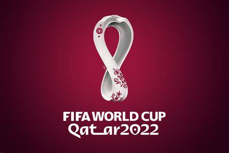
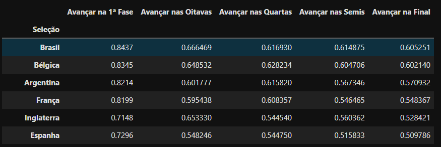

A variação no futebol é fascinante... Modelar não é apenas representar a realidade, mas sim transmitir uma equação útil. Tentamos quantificar as possíveis variações nas partidas de futebol, colocando assim os intricados problemas do jogo em detalhes minuciosos. Ao quantificar todas as incertezas possíveis no futebol, buscamos prever os resultados de todos os jogos na Copa do Mundo.
Se este projeto é de código aberto e aceita contribuições, todo o material, videos, formulas e codigo fonte estão disponiveis no meu GitHub.
Eu queria responder duas questões:
Utilizamos a Distribuição de Poisson para quantificar a probabilidade de marcar gols. Essa escolha é respaldada por sua eficácia em dados de futebol para a contagem de gols em partidas.
Calculamos a probabilidade de cada gol multiplicando as chances de um time marcar tantos gols pela probabilidade do outro time marcar a mesma quantidade. A probabilidade de empate em uma partida é a soma das probabilidades de empate em cada resultado, enquanto as vitórias são calculadas somando as probabilidades de suas combinações de pontos.
A partir da média histórica de gols na Copa do Mundo e considerando alguns fatores, estabelecemos a média esperada de gols para esta Copa como 2,75.
m = m¹ + m²
Onde m é a média total. Agora, para cada equipe, determinamos a média restante usando o fator de força de cada equipe.
f¹ - força da Seleção 1
f² - força da Seleção 2
Utilizando o ranking da FIFA, convertemos os valores para um intervalo (a, 1), onde 1 representa a escolha mais forte.
Com essa modelagem, os grandes favoritos para a COPA do Mundo no Qatar de 2022 são: BRASIL, BÉLGICA ou ARGENTINA.
A ARGENTINA foi a CAMPEÃ da Copa do Mundo de 2022, confirmando minha analise.
